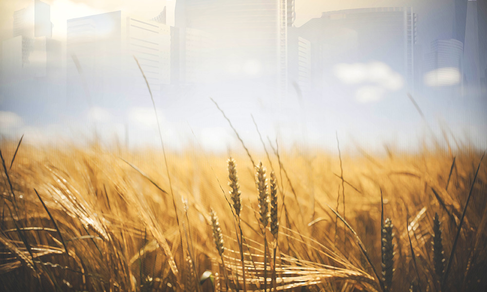

|

Good Old DaysAndrew Leon HudsonGramps looked over to where the crop was being taken in, strong backs bending, the heavy-headed stalks bending too as a dry breeze came off the plains towards the ridge above the village. That wind would be over the ridge a damned sight sooner than he would, he thought to himself. The sun was hot but lowering now, and anyway it wasn't too much for his thick, tanned hide just yet, no sir, not even at noon. He turned from the fields and followed the stream towards home. Slow walking. By the time he had passed the thin strip of woodland, the inland clouds were pinking and the sun was a ruby on the horizon at his back; the farmers would be lugging back the first bails soon, like ants under hazelnuts. He paused for a drink where the stream poured into the well pool before draining through the overflow sluice and out of sight; when he crested the ridge, the first group of farmers had passed him already with a polite chorus of greetings. One thing there that changed for the better: youngsters showed some respect for their elders again. Not always like the other elders did for each other, mind. Gramps paused on the ridge, looking down into the circular valley. The stream emerged below him, running swiftly down the steep valley wall before circling the northern side of the village; clustered near the waterline, small straw-thatched earth-and-stone huts were arranged around the community longhouse in loose circles. The longhouse; a place for social occasions, important meetings, and for old folks to sleep clustered around a big fire every night. Home for him, now. The only other structures to rival it marked the perimeter of the community: the livestock shelter (and fertilizer store) at the base of the slope directly below him, a side-stream redirected from the main one to water the animals; and the two big storehouses, one on the north flank for wood, stone, and other vital materials, the other on the south for grain and the sea crops. The lagoon dominating the valley was also circular, also artificially so, though no-one remarked on it; it was simply a feature of their home. The far walls of the valley dived straight into the water, but under the surface the lagoon floor leveled out quickly and continued that way almost to the far side. As the high ridge on descended towards the coast it pushed out into the sea, like a thumb and forefinger not quite pinched, not quite meeting out amidst the waves. Thus lagoon and ocean remained connected; the shallow passage allowed the tide in and fishing boats out, while the broken ridges shielded the lagoon and the village from an ocean battering when the stormy seasons came. The lagoon needed this protection. Where the bottom was oddly level, rich patches of weed were carefully cultivated, providing a good share of the village's food. That had been one of Gramps's ideas. After leveling the terrain for the village to come, they scooped the rubble into the bay before layering it with ocean silt to build the huge growing bed, spent years experimenting with potential crops before settling on the current spreads, fast growing and nutritious. Now the village stood on a small plain dug into the slope, a beaching shore for their boats at its foot and a vital source of food before them. Because of Gramps, and people like him. None of these young folk knew it now, though. This was the way it had always been for them. The low sun striking the ridge line cast the entire valley into shadow and as Gramps began the sideways descent along the upper slope he felt the dim air chill on his skin, as if he was stepping down into a darkly ethereal lake suspended over the real one, submerging himself completely before walking to the bottom. He felt the cold more these days and although he claimed his regular afternoon walks to the fields were for exercise, in truth he simply wanted to waste as little direct sunlight as possible – another quirk to make him stand out among the rest. “Good to see ye, Gramps,” came a voice at his back. The last of the farmers drew abreast of him on the path, a plain-faced man with a quick but gappy smile. Balanced on his broad back and overhanging his head was a huge loose bail of wheat cut close to the root. Like the other fieldsmen he was stripped to the waist now he had this extra shelter, his thick shirt and wide-brimmed straw hat hung off the leather strap cinching the bail together. “Good to see you, Tomas. The fields have been good this year, eh?” “The fields are the goodest, Gramps.” “Reckon the fishers might debate you on that point,” Gramps observed, a glint in his eye. Tomas and his fellows would likely be up the whole night in the granary, separating grain from straw, and drinking spirits distilled from the first until they all fell asleep on the second. The fishermen may bring home food more regularly, but the Harvest weeks would always be a special time for those that worked the land. When they were done, their take alone could feed all the village's stomachs, human and livestock both, well into the next year. “Ah, well. It's all good, as they say.” “That they do.” Gramps nodded to the bail. “You want me to spot you with that?” Tomas cracked his smile again and humped his burden up on his shoulders with ease. “Ye fancy a go, eh? I think ye could and all. I reckon there's strong walls under that grey thatch yet.” Gramps gave a little hop mid-stride, and Tomas hooted a laugh. “I was going to offer ye a lift meself,” he added, and went down on one knee. “Ye want to jump on?” Gramps patted the bail but shook his head. “Thanks for the kind thought, but I'll finish my walk. I'll get as wrinkled as your old Grampa did if I start taking it easy.” The young man rose again and they smiled. Tomas' grandfather had passed on just three summers back. Over forty years, Gramps thought he’d had, a damned good stretch, and better than his grandfather before him, no doubt. Time was, knowing your grandfather was a rarity rather than the norm. Gramps still remembered his. Tomas nodded and picked up his pace. “Fair enough. Good on ye, Gramps. Ye get tired of me da's snoring tonight, ye know where we'll be. And we'll have a drop of something with us to warm old bones.” “Good on you, Tomas. I know you will.” He watched Tomas stride on after the line of men. The first of them were going in at the grain store with their bails, then quickly out again stretching and calling to wives and mothers for supper and a first shot of spirits. Out on the bay, the fishing boats were coming in through the sea mouth, and even at a distance he could see they rode high in the water. The catch would remain light all through until spring now, but the winter storms would be on them soon enough anyway. Time to mend nets, repair boats, and shelter with the rest of us. The air grew cooler and cooler as he neared the village. Some of the farmers entered the longhouse carrying dry wood from the northern store to build the old folks' evening fire, and Gramps made straight for it himself. When he entered he found the older folks settled in around it, golden lit by the fresh flames, waiting for the fire to age a bit and put out more heat. “Halloo, Gramps,” they welcomed, and he halloo'd them back, making for a space as two old lasses shuffled apart for him, one handing him a blanket for his shoulders as the other rubbed his hands to warm them. Sweet old girls. No-one asked about his walk, and no-one ever joined him on it. They were paler than he, his skin still the nutty shade of a life spent largely under sun, and even if all the young fishermen and farmers boasted tighter skin than he, Gramps could more than match anyone for health. Ayanne, who was Tomas's wife, came along shortly with a handful of wooden bowls and a big pot nestled against one hip. She handed the bowls for the first in the circle to pass around, then followed them, doling out a thick steaming stew of fish and potatoes. She was a strong, pretty thing. Her husband was a decent specimen, but it was a common thought amongst the old folks that Tomas was the luckier in the pair. She gave Gramps a shy smile as she rounded the circle. “Hungry, Gramps?” she asked. “Always for your fish stew, Ayanne.” “Well, ye eat,” she said with a pleased look, adding him an extra dollop. “Got to keep ye strength up, eh?” She moved on round the rest then headed back to her hut, leaving Gramps at the mercy of silent knowing smiles and grouchy harrumphs from what passed for his peers. He concentrated on his food, staring out past the fire and through the doorway, eastward, at the deep blue sky reflected in the lagoon. The smooth sea beyond the bay mouth merged with the darkening sky into no horizon, and the last of the fishing boats returning home seemed to float down from the distant clouds like curled brown leaves in the autumn. Their chores done for the day, the littlest ones soon finished their meals and came running in to play beside the fire. Their nonsense and chatter might drown out the slurping of the increasingly toothless, but no-one begrudged them it and the older folks always left space inside their circle; silhouetted before the crackling flames they put on a fine show, and many grandparents would fall asleep with both warmth and smiles on their faces. It was a world to grow up quickly in, and not long was left to childhood before boats and fields called them off to work; best to make the most of it. Not so many children either, the last few years; no-one discussed it but everyone was aware. They were looking to young couples like Tomas and Ayanne to fix that, but it was looking like a long wait. Gramps knew what that would mean. It had been sooner or later for a while already. That evening, as the darkening sky revealed a mess of stars, Gramps listened to the harvesters celebrating their hard work, chorusing songs and toasting the fields, the weather and themselves, while the rest of the people slept. The fishermen would be up well before dawn, a few hours from now, complaining about the disturbance to their rest, how no-one toasted them for loading dinner tables all year round, and how, when fishermen drink, they do it properly. Gramps slowly got up, hanging his blanket around his shoulders as he left the slumbering circle huddled around the embers. There was a pop from the hearth, then a low parp sounded in answer from deep within a digesting sleeper, and he grinned. Outside, the huts were dark but for the glow of their night-fires. Only the grain house was fully lit – just like those singing within her; he grinned again – a short bright amber shaft cutting out from the doorway. Gramps started towards the lagoon, picking his way between the silent huts – then a voice murmured, “Hallo, Gramps.” He turned with a kind smile. “Good evening, Ayanne.” “Will ye come in?” “Of course I will.” From across the way, a young pair of eyes watched Gramps enter the hut and the heavy drape fall across the doorway behind him. Then they turned to where another youngster slept soundly after playing late: Ayanne’s son by her first husband, kipping over with a friend at his mother’s suggestion. A little adventure away from his own bed for a night. # Gramps pretended he didn't see the lad watching him from a distance all morning. First he was hid in the shadows alongside his hut, then as noon approached and his shelter shrank away he moved into the cool of the doorway and watched from there instead. Gramps stayed in the sun all day if he could, trousers rolled up to his boney knees while, today, he worked grain with pestle and mortar, on other occasions whatever was then needed done. Behind him in the long house the other old folk were doing other slow but useful chores. To be slowly useful was all one had left to aspire to after a while. Eventually he began to tire of the child’s silent observation. He fixed him with his most fierce stare and forced himself not to smile when the little one jumped involuntarily. “You there, lurking. You're Martan's lad, ain't you?” The lad glanced behind him but found no support from within the family hut. He nodded. “Get your little bot over here sharpish.” The lad stuck his chin out defiantly and started to pace out the way to the long house like the bravest of soldiers, but two steps away from the shade his pale skin clearly started prickling and he scooted the rest of the distance, jumping into the long house doorway with relief. Gramps carried on grinding but cast a sideways look at him. “Well lad, out with it. What's your question?” The lad cast his gaze around for a second, nervously, then came to stand beside him on the edge of the long house's shadow. “Are ye god?” he asked. Gramps paused, then ground on. “Ain't no such fella.” “But…” “But what?” “But, yer very old.” “Hah.” “And ye don’t mind the sun, and ye know everyone, and about lots of things, me da says. And…” “Hmm? Yes?” “And… ye give life. Me ma says.” The lad pulled a face. “I think. Ye are god, ain't ye?” Gramps rested the pestle and squinted at his interrogator. “What makes you say I’m old, then, eh?” The boy had enough awareness to look vaguely uncomfortable at the question, but he forged on. “Ye’ve got wrinkly skin,” he said. “And white hair.” “Your grandpa Yanik back there, he doesn’t have white hair.” They both looked into the dimness of the longhouse. The other old folk still crowded the fireplace, soaking up the remaining heat as they did their chores. One pale dome drew their attention, a head like a large spotted egg balanced on a wrinkled pucker of a face. Yanik noticed them looking and grimaced, revealing a mean maw that was considerably more gap than tooth. “And teeth,” added the lad. “Old people lose their teeth. That’s how ye know yer growing older.” “Really. And how many teeth have you got?” The boy bared them proudly. “Trelve and trelve.” Gramps pulled a face of great admiration. “And your pa, how many does he have?” “Just twenty. He had one out just this week, and he’s… twenty-five years, he is.” “Well, if I’m so old, lad, how many teeth do you think I’ve got left, eh? Any?” After letting him squirm for an embarrassed moment, Gramps slowly unleashed his smile. The creases of his cheeks, his crow’s feet eyes, yes, they were deep and many; but his teeth filled his mouth right to the back, even if the line of them wasn’t quite so ruler-straight as it had been in his youth, or in his prime. The boy stared at them, his own mouth hanging open a little. “Like first teeth,” he said. “Did ye never lose them?” “Don’t ye listen to his stories, boy,” a grating voice called from the longhouse, and the boy started guiltily, closing his mouth with a snap as he looked to where Yanik was scowling their way. Gramps sighed and returned to his pestle, but despite the hushes and grumblings of the other old folks, Yanik was levering himself upright and coming to join them. Gramps ignored him, but the boy seemed suddenly cowed, as if this crooked bundle of stalks towered over them like a giant. “Feenan! Ye should have something to be doing, shouldn’t ye?” Yanik snapped. “Up with your da, eh? Yer a young’un, ain’t ye? Get a hat on yer head and get out in the daylight!” As the boy ran for his hut, Yanik aimed a yellow eye at Gramps. “An’ as for ye. Don’t go filling his head with yer crap.” Gramps paused, then slowly put aside his pestle and rose to his feet. Stood nose to nose, Yanik didn’t back down. A part of Gramps admired him for it, even while another part soured still more. Behind him the lad Feenan emerged from his hut beneath a wide-brimmed straw-woven hat, shading him like a portable eclipse. His mother followed, hesitating when she saw Gramps and Yanik in the long house entranceway. She glanced at Tomas’s hut opposite, then slapped her son’s backside to get him moving. Gramps turned at the sound, saw the lad heading for the ridge trail. He turned back to Yanik, feeling a shamefully petulant spark as he tossed his mortar down beside the pestle. “Maybe I’ll take my walk early today,” he said. “Keep the boy company up the slope, eh?” He fixed Yanik with a pointed stare. “Got to look out for the young ones, don’t we? See they’re okay, eh?” Yanik’s face flushed, then as Gramps turned his back and ambled into the bright day it sank back into its pale, bitter pucker again. He returned to the fire, the others giving him silence to privately fume in. “Hold up, lad,” came Gramps’ voice, more distant. “I’ll walk with you for a while, eh?” # “I remember when all this wasn't fields.” Feenan looked up from the path. Gramps was squinting at the sea of grain with an expression like he'd said something funny, but the boy didn't know what. He wondered if Gramps was going to explain about what he’d heard his ma saying to his friend’s ma the day before. Before Gramps went into their hut that night while his friend was visiting, and both their das and the other farmers were getting drunk after a hard day of harvesting. Before them the work was continuing, half the crop high and waving, the rest cut low. The fields stretched, level and broad, an orderly patchwork of yellow and brown nearby; then, fading into the distance, scrubland rippled into the suggestion of ever greater hills. From their spot, on lower ground in the shade of the tree line, the whole vista seemed to emerge from behind those golden waves as from a curtain drawn part way back. Curtains in the village were made of this same rough straw, thickly woven, oiled and hammered soft, then hooked tight over the windows at night or through storms and strong winds. After brief consideration, Feenan decided that curtains were more beautiful before they were harvested. “What was they then?” he asked. Gramps startled. “What?” “What was the fields when they wasn’t?” “Oh. Almost everything except fields. But mostly things for people.” “Fields are for people.” “That's very true.” Gramps smiled at him then looked away again, and Feenan felt pleased. “But there were lots of things before. There were carts, that you could ride on and went as fast as a bird flying right at you. There were lots more people. Imagine we got everyone in the long house at once and filled it up – and outside there are more full houses from here to the horizon and further – more people even than that. And there were factories, places for them to work all day, that spread out for miles. And cities for them to live in, full of tall buildings for them all.” “Like the long house.” Gramps shook his head and held out his arm. “Long is flat.” He raised his arm at the elbow. “Tall is up. Like a tree. But these went up and up and up. Lots of rooms on top of each other. Tall buildings like a forest of trees. And then great roads to take people from the cities to the factories and back every day, covering everything up under them. No more forests. No more fields.” Feenan considered this. “Why didn't they live near where they worked?” “Because they didn't have to. They could get on the road, like the path from the village to the fields here, and – pap – they'd be there. So they could live where they wanted, way off somewhere, as long as there was a road connecting them. Roads going everywhere, as far as you could see.” The lad looked around at the workers harvesting, then saw a figure approaching along the stretch of the path between field and woodland. His da, the herder, in the midst of the flock of sheep. It looked like he was watching them back. “If they was so many people but they got rid of all the fields,” he asked, “where did they get enough to eat?” “They didn't. Lots of people didn't eat at all. See our harvest? Imagine if, instead of all that, you had to feed the whole village from what comes out of… ten bails.” “Ye couldn't!” “That's right.” Feenan thought about that as the first of the sheep passed them. His da nodded to Gramps cautiously across the shortening distance. “Good day, Gramps,” he called. “Good day, Martan, how are you?” “Well, Gramps. Thank ye.” Feenan attracted a few sheep to him with low clucks, petted their wool and tore up grass for them to snuffle from his palm. “So where did all our fields come from?” he asked. “They’ve always been fields here, son,” said his da, pausing as the sheep drifted on around them. “Bah! Easy for you to say, Martan,” Gramps barked. “You remember a world that's exactly the same as this one, and if you can imagine anything you imagine that it's always been.” Feenan looked at Gramps in surprise. The old man was fuming, brows rolled down and eyes in shadow. For a moment he was about to laugh at the sight – until he saw his father looking a lot more than just startled at the outburst. “And that's always been the problem,” Gramps went on, “people thinking nothing will or can ever change, and blind or careless of when it starts to. Generations of stupidity and limitation, fixed on germinating another – something, by the way, they still need our damned help with half the time – and the next thing you know you're spitting and wailing because everything worth having has been knocked into a cocked hat.” Feenan watched the men stare at each other, wondered what his da would say to end the argument, then saw that his da didn't know what to say. “What's a cocked hat?” the lad asked, his voice loud in the silence. Gramps flung a glare his way, still swept up in his anger. “It's sunshine that burns, and damned great holes in the ground that glow in the dark for a thousand years, that's what a cocked hat is,” he snapped, then caught himself and looked away. The awkward moment drew out, but Feenan got the feeling that Gramps was embarrassed about losing his temper. Finally his da made a quick, almost despairing gesture towards his meandering flock. “Got to be getting these along now, eh,” he muttered. “Yes, don't be late,” Gramps blurted. “I'll keep you out all night talking if you let me.” Gramps rolled his eyes as if talking about someone else. His da chuckled, relieved. “Always time for another story, Gramps, come bedtime.” He turned to Feenan and jerked his head towards the sheep. “Fancy giving ye old man a hand with the stragglers, eh? Give Gramps a bit of peace for a while, eh.” Feenan ran towards a pair of ewes edging field-ward, whistling little peeps at them to drive them left, then right, then back to the rest. As they all moved off towards the ridge his da flipped Gramps a little salute, and Feenan waved. Gramps waved back. # Feenan thought about Gramps’s stories. Late in the night, he got up and slipped out between his sleeping parents. He went to the little cupboard, bit off a short-length of wick, and scraped a few fingers of tallow from the candle bowl. He rolled them together, lit the tip from the smoldering ashes in the fireplace, and went outside, shielding the flame from the breeze coming off the sea. Across the way, as he drowsed in the longhouse surrounded by slow, soft, phlegmy breathing of his kin, Gramps looked out through the entrance at one of his great-great-grandsons walking through the darkness. Then he slept. The lad stopped close to the stream, listening to the trickle of water and the low sounds of the livestock in their shelter nearby. He knelt and, keeping his body between the candle and the wind, began scooping up handfuls of sandy soil until he'd dug a hole a half yard around and his arm disappeared in past the elbow. He planted his little candle at the bottom and lay down on his belly nearby to look at it. The flame was hidden by the edge, so he saw only an amber glow creeping up from within. A hole, a great hole, glowing in the dark. Soon it began to flicker and fade. Feenan rolled onto his back to look at the cool safe light of the stars, and as he fell asleep he imagined paths wider than the village, stretching away further than the furthest clouds, and buildings so tall you’d need to climb up a rope to get to the top. © Andrew Leon Hudson 2020 All Rights Reserved |
||
|
Date of last update 1 Apr 2020 Portions of this site are copyrighted to third parties |
||